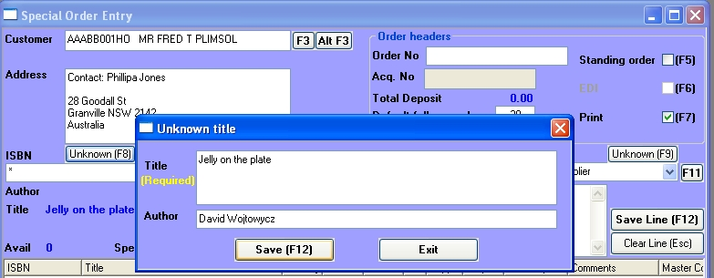
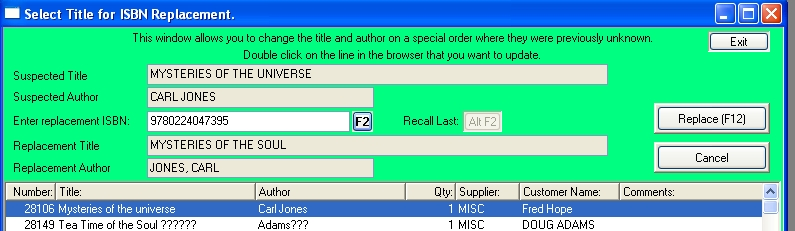

|
Special orders where the product in not known
|
Previous Top Next |

| · | Open the draft special order window from the main menu: Sales/Specials/Replace.
|
| · | The window will display all outstanding draft special orders in the browser.
|
| · | Double click on the line you wish to process.
|
| · | The line will be copied onto the Suspected Title and Suspected Author fields and the cursor will move to the Enter Replacement ISBN field.
|
| · | Type in the replacement ISBN or click the F2 button to open the title master to search for the title. (If you have just added the ISBN to the database, or just looked it up, you can instead just click on the Recall button).
|

| · | Once you have found the title, click the Replace button. It now becomes a normal special order.
|
| · | If you already have stock of the new title, the Allocate from Stock window will open allowing you to allocate stock against this order.
|